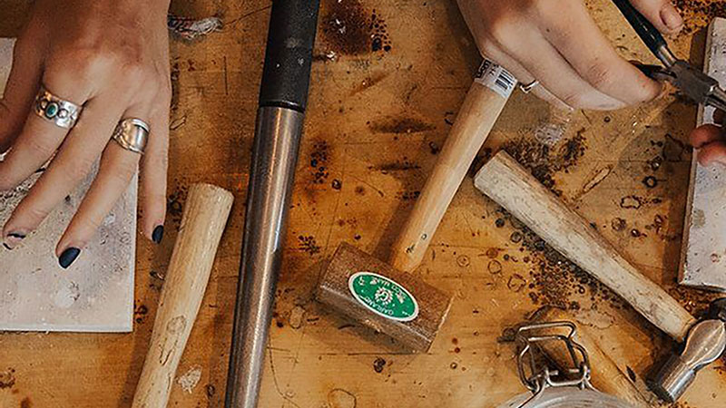
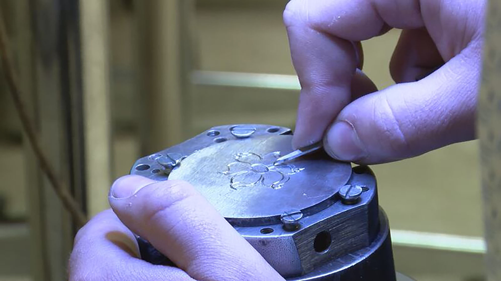
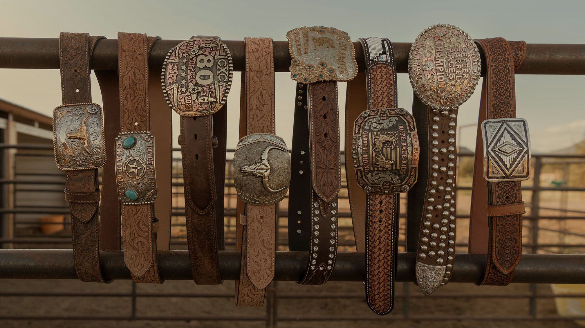
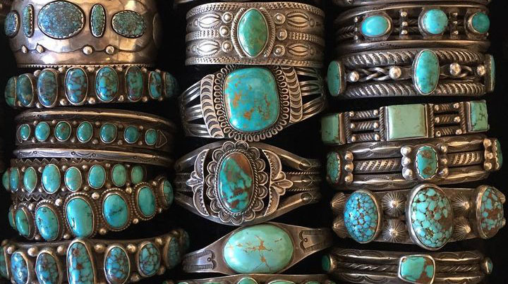
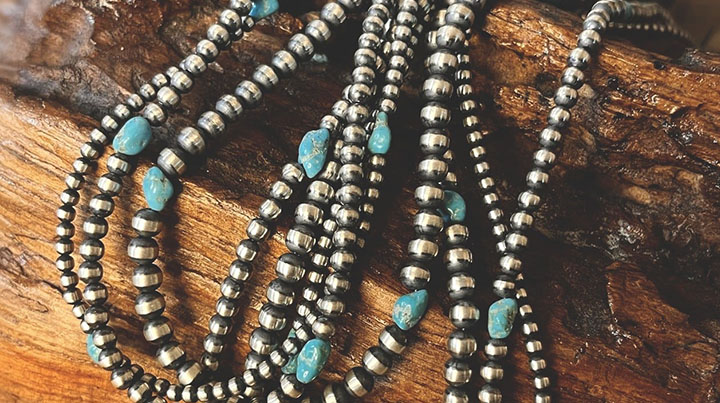
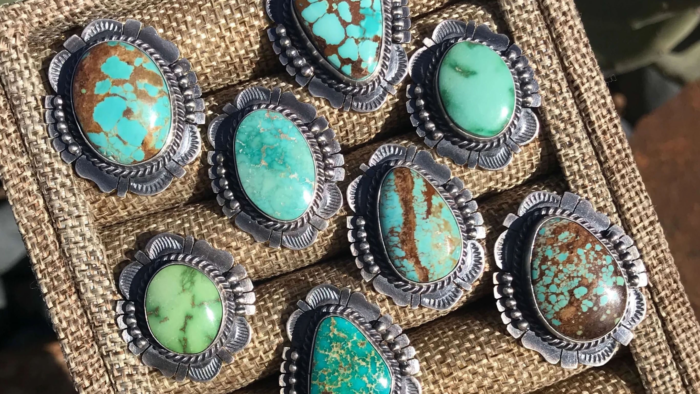
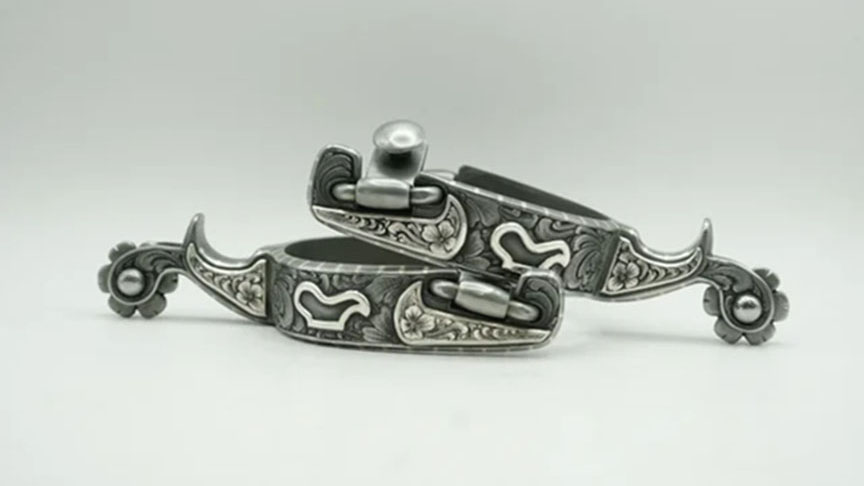

Silversmithing has long been a cornerstone of the Western industry, blending craftsmanship and tradition creating the rugged spirit, artistry, and heritage of the West.

The art of silver carving in the Western tradition showcases patience and precision, where every cut and detail transforms raw metal into a piece that tells a story of craftsmanship and heritage.

In Western culture, belt bucles are more than just an accessory—it's a symbol of pride, craftsmanship, and tradition, often telling the story of the wearer's journey and achievements.

Native turquiose jewelry, inspiring western jewelry, carries deep cultural meaning, blending natural beuty with spiritual symbolism honoring land, heritage, and traditions of Indigenous peoples.

A hand crafted sterling silver bead, symbolizing beauty, resiliance, and the artistry are a timeless tradition passed down through generations.Sterling silver cowboy toothpicks trace back to the Old West, where silversmiths transformed practical tools into cherised symbols of status, craftsmanship, and frontier tradition.

Turquiose rings have long held a sacred place in Native traditions of the Southwest, valued not only for their strking beauty but also their spiritual power, protection, and deep connection to the earth.

Silversmithed spurs embody the artisty of the West, where master craftsmen elevated a cowboy's working gear into symbols of pride, status, and heritage on the open range.